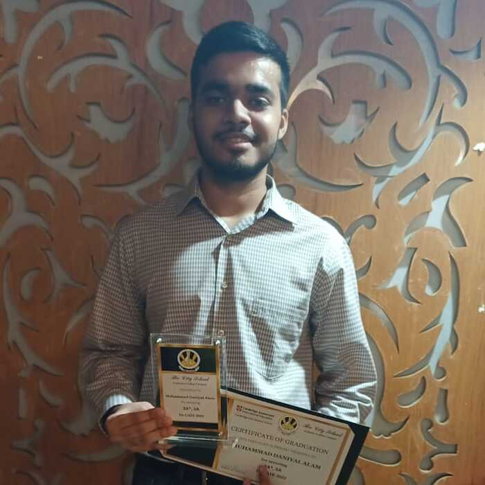

I completed my early education at The City School in Karachi, where I studied from Grade 1 through to A Levels. I passed my O Levels in 2022, and my A Levels in 2024 with A's and A's*. Alongside my university studies, I am also pursuing the Google Cybersecurity Professional Certificate on Coursera to enhance my skills in cybersecurity and technology.
I'm passionate about sports, particularly cricket and soccer, which I enjoy both watching and playing whenever I get the chance. There's something thrilling about the strategy and energy of these games that keeps me hooked. When I'm not on the field or watching a match, I love diving into a good book, especially thrillers. The suspense and unexpected twists in those stories really keep me engaged.
In the next ten years, I see myself as a skilled Cybersecurity Specialist, deeply involved in protecting organizations from evolving digital threats. My passion for cybersecurity drives me to continuously learn and stay ahead of emerging technologies and security challenges. After completing my Bachelor's degree in Cybersecurity, I plan to pursue a Master's degree abroad, where I can gain deeper insights into global security practices and advanced techniques. Ultimately, I aspire to work with top-tier companies, contributing to innovative solutions that safeguard data and infrastructure. I am committed to making a meaningful impact in the field, helping organizations navigate the complexities of cybersecurity in an increasingly connected world.
My parents are my greatest inspiration. Their unwavering hard work, dedication, and countless sacrifices have shaped me into the person I am today. Growing up, I witnessed their commitment to ensuring I had the best opportunities, and their support has been a constant source of motivation in my life. Their relentless drive to build a better future for me pushes me to strive for excellence and achieve more than I ever thought possible. I am deeply grateful for their sacrifices, and I aim to honor their dedication by working tirelessly toward my own dreams and goals.
One of my most cherished memories is when I successfully completed my O Levels in 2022. It was a moment that not only validated my hard work but also reinforced my belief in my own potential. The months of studying, the challenges I faced, and the support I received from my family made the accomplishment even more meaningful. It taught me the importance of perseverance and discipline, showing me that with dedication, anything is achievable. This memory serves as a constant reminder that success is the result of continuous effort, and it motivates me to keep pushing toward my future goals.
